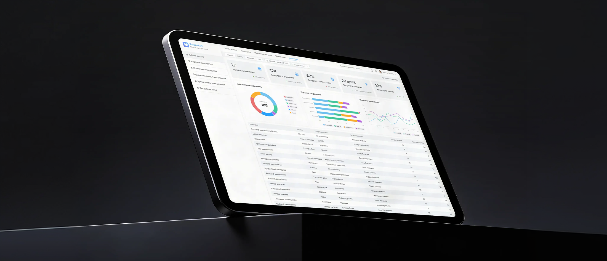
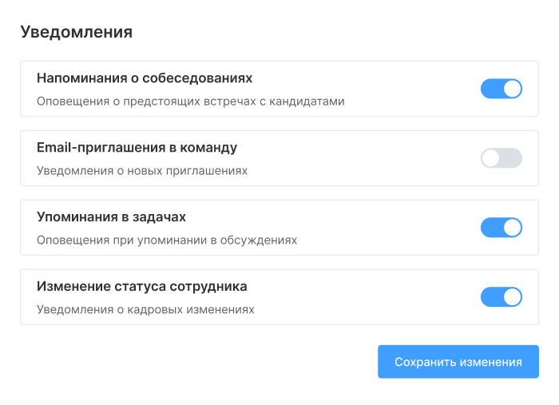
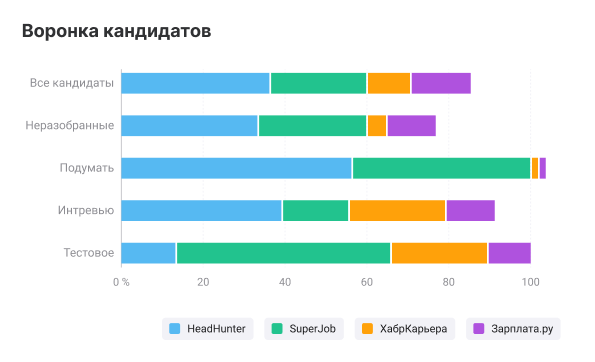
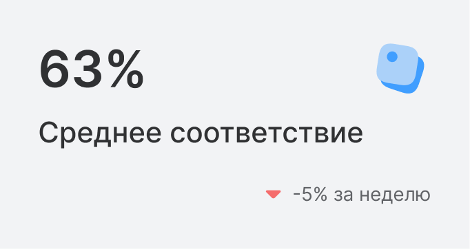
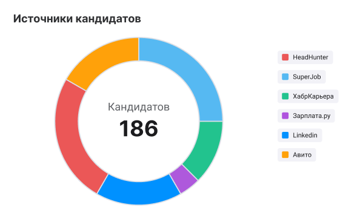
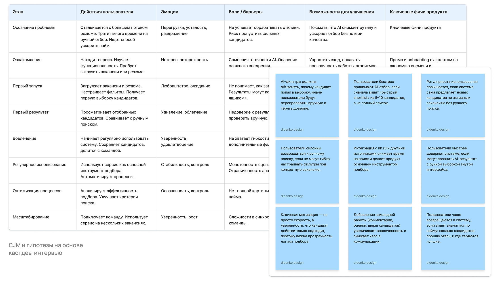
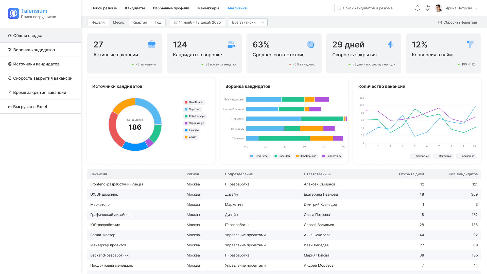
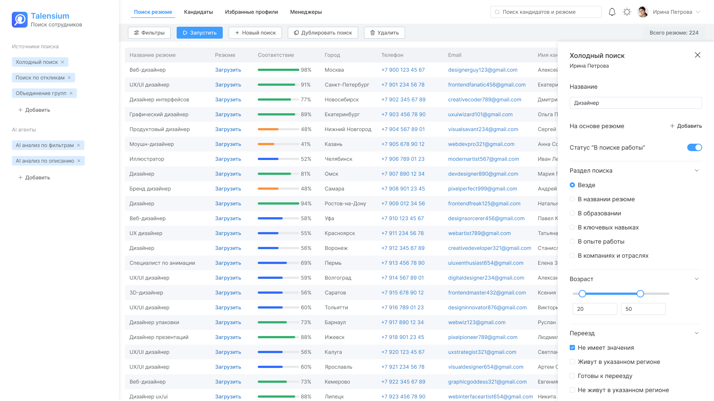

сегмент: B2G / внутренние системы
продукт: система поиска и анализа кандидатов
платформа: Desktop
Упростила поиск кандидатов с помощью системы анализа и AI-фильтров

Контекст
Работа с кандидатами строилась вокруг hh.ru и ручного разбора резюме. Рекрутеры просматривали десятки откликов подряд, вручную оценивали релевантность и сохраняли кандидатов в разные списки. Процесс занимал много времени и сильно зависел от опыта специалиста.
Задача — упростить поиск кандидатов и сократить время на первичный разбор резюме.
Результаты
- время первичного отбора кандидатов сократилось примерно на 35–40%
- снизилась нагрузка на рекрутеров при работе с потоком откликов
- количество просмотренных нерелевантных резюме уменьшилось на 25%
- повысилась скорость принятия решений по кандидатам
- работа с кандидатами собрана в едином интерфейсе
- точность первичной оценки кандидатов выросла примерно на 20–25%







Моя роль
-
я проектировала продукт с нуля:
- выстраивала структуру интерфейса
- формировала сценарии поиска и работы с кандидатами
- работала с требованиями и логикой фильтрации
- участвовала в проработке AI-функциональности
Исследование и подход
Чтобы собрать рабочую модель поиска, я провела серию интервью с рекрутерами и разобрала текущий процесс подбора.
-
на основе этого:
- выделила ключевые сценарии работы с кандидатами
- собрала архитектуру системы
- описала задачи пользователей через job stories
- сформировала гипотезы по ускорению подбора
Это позволило перейти от ручного поиска к более структурированному и управляемому процессу.

Карточка кандидата
Работа с кандидатом вынесена в отдельный сценарий.В карточке собрана ключевая информация: контакты, опыт, оценка соответствия и данные от AI. Это сократило переключения между экранами и упростило принятие решений.

Аналитика
В системе добавлены инструменты контроля подбора: воронка кандидатов, источники откликов и динамика процесса. Это позволяет оценивать эффективность и быстрее выявлять узкие места.

AI-анализ
В систему добавлен автоматический анализ резюме: оценка соответствия вакансии, выделение ключевых навыков и краткое описание кандидата. Это помогает быстрее понять, стоит ли рассматривать кандидата дальше.

Результаты
- время первичного отбора кандидатов сократилось примерно на 35–40%
- снизилась нагрузка на рекрутеров при работе с потоком откликов
- количество просмотренных нерелевантных резюме уменьшилось на 25%
- повысилась скорость принятия решений по кандидатам
- работа с кандидатами собрана в едином интерфейсе
- точность первичной оценки кандидатов выросла примерно на 20–25%
Инсайты проекта
Этот проект показал, как сильно на подбор влияет качество первичной оценки кандидатов. Когда система заранее подсвечивает релевантность, навыки и совпадения с вакансией, рекрутер быстрее принимает решение и меньше времени тратит на ручной разбор резюме.
AI-фильтры работают лучше, когда их логика понятна пользователю. Прозрачное объяснение оценки повышает доверие к системе и помогает встроить автоматизацию в привычный процесс подбора.